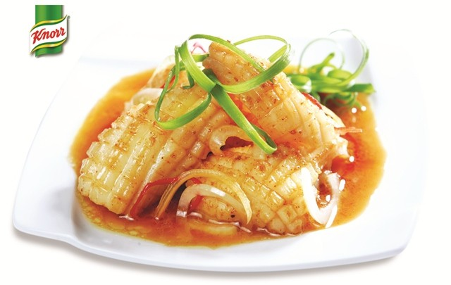

Mực khìa trái dừa

- Khẩu phần 4
- Chuẩn bị 25 phút
- Thực hiện 20 phút
Nguyên liệu
- 400g mực lá
- 1/2 củ hành tây
- 4 quả dừa xiêm nhỏ
- 1/2 thìa súp gừng cắt sợi
- 1 thìa súp ớt sừng cắt sợi
- 2 nhánh hành lá
- 1,5 thìa cà phê Hạt nêm từ Thịt Thăn, Xương
Ống và Tủy - Bổ sung Vitamin A
- 1/2 thìa cà phê tiêu sọ đập dập
- 1 thìa cà phê ngũ vị hương
- 2 thìa súp dầu ăn
Hướng dẫn thực hiện
- Mực lá lột da, rửa sạch, khứa ngang lưng, cắt miếng vừa ăn, ướp với tỏi
bằm, Hạt nêm từ Thịt Thăn, Xương Ống và Tủy - Bổ sung Vitamin A, tiêu
sọ và ngũ vị hương, để 10 phút cho thấm gia vị
- Hành tây lột vỏ, cắt miếng mỏng
- Dừa xiêm lấy phần nước, để riêng một bên
- Đun nóng dầu ăn cho mực vào chiên vàng, chế nước dừa vào, khìa mực đến
khi nước xốt sệt lại là được, cho hành tây, gừng, ớt và hành lá vào, đảo đều
- Múc mực vào quả dừa, cho vào lò nướng vài phút cho nóng, để mực khìa quả
dừa vào dĩa, dùng nóng.